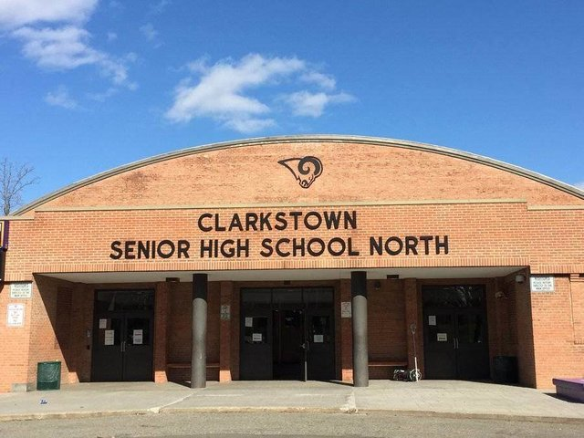
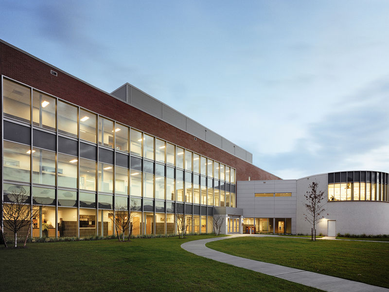

 Dorian Bacharach attended Clarkstown North High School from Sepetember 2013 and graduated in June 2017. It was there where he created his own club for Digital Music Productions, started an animation series, and became interested in iPhone software development. Academically, he enrolled in honors and AP classes, and aced all of them. Athletically, he played Football (for 5 days), fencing, and Track & Field.
 Currently enrolled at Rockland Community College, Dorian is apart of the Sam Drapers Honors program at the school. Elected as a Freshman Senator, he has dedicated his time ensuring that all RCC students are treated equally, having enjoyable school experiences, and becoming the voice for the students.